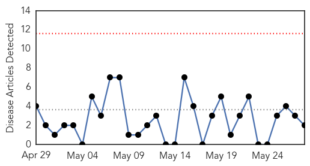
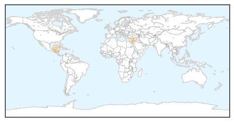
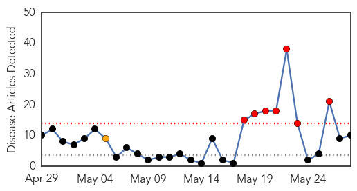
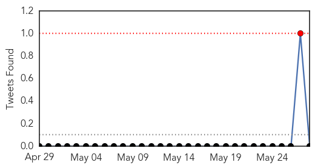
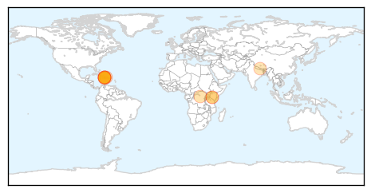
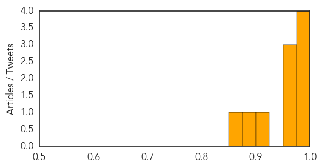

Hepatitis
30-Day Web Trend
0 alerts, 0 warnings

30-Day Twitter Trend
0 alerts, 0 warnings

Article Locations
Article Confidences

Top Articles:
Top Tweets:
-
No tweets found for May 28, 2015
Cholera
30-Day Web Trend
7 alerts, 1 warnings

30-Day Twitter Trend
0 alerts, 0 warnings

Article Locations
Article Confidences
Top Articles:
- 0.997
- Traveling overseas this summer? The CDC issues a plethora of health travel advisories
- 0.988
- Cholera Surges In Haiti As Rain Arrives Early
- 0.984
- Cholera Surges In Haiti As Rain Arrives Early
- 0.983
- Haiti: US$50 Million for Improved Access to Clean Water and Sanitation in Cholera Hot Spots
- 0.969
- Cholera containment measures stall death rate in Tanzania refugee camp
- 0.966
- Kenya : Medics in Narok probe 'cholera' case
- 0.952
- Haiti to get US$50m grant for cleaner water and better sanitation in cholera hot spots
- 0.901
- News Scan for May 28, 2015
- 0.885
- Govt to provide health services from tents during monsoon
- 0.852
- Kenya to strengthen food safety in wake of cholera outbreak
Top Tweets:
-
No tweets found for May 28, 2015